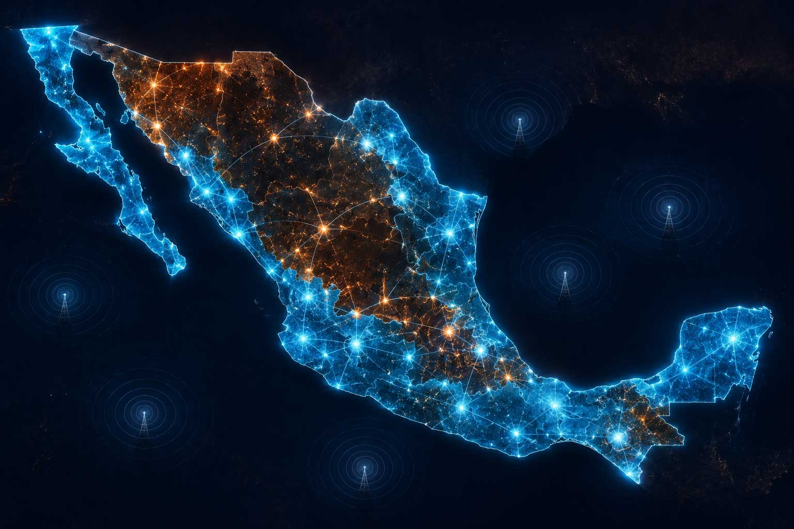
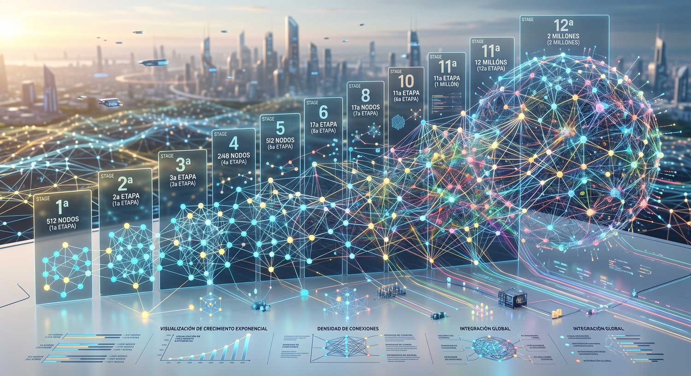

Una comunidad alrededor
de la conectividad
8 SECCIONES · UNA IDEA
¿POR QUÉ EXISTE MIZTEL?
Empecemos con algo completamente cotidiano
todo pasa por el celular
La conectividad ya no es un lujo.
Es parte de nuestra vida

¿POR QUÉ EXISTE MIZTEL?
En México, millones de personas aún no tienen un acceso adecuado a internet
y quienes sí lo tienen sienten que pagan demasiado.
De ahí nace Miztel
No cambiar tu necesidad de estar conectado — cambiar lo que sucede alrededor de ella.
¿QUÉ ES MIZTEL?
Una idea para grabarte:
crear una comunidad
alrededor de la conectividad
La tecnología organiza y transparenta el sistema — algo impensable en las telefónicas tradicionales.
¿QUÉ ES MIZTEL?
Personas que utilizan el servicio, que lo recomiendan,
que ayudan a que el proyecto crezca.
conectividad · tecnología · comunidad
Sin construir desde cero: aprovechar la infraestructura existente
y usar la tecnología para organizar lo que ocurre alrededor del servicio.
LA CONECTIVIDAD: EL SERVICIO REAL
Comunidad, tecnología, blockchain… pero al final necesitas algo sencillo:
que tu celular funcione
Sin levantar una red nacional desde cero: nos concentramos en el servicio y el ecosistema que existe alrededor de él.
LA CONECTIVIDAD: EL SERVICIO REAL
No estamos creando una necesidad nueva
Entramos en una que ya existe — y que usas todos los días.
La diferencia está en cómo decidimos organizar todo lo que sucede alrededor de ella.
TECNOLOGÍA, TRANSPARENCIA
Y EL REGISTRO DIGITAL
¿Cómo organizar todo de forma transparente? Entra la tecnología blockchain:
Un registro digital donde las operaciones quedan registradas y pueden verificarse.
“confía en mí, las cuentas están bien”
Las reglas se establecen previamente y los contratos inteligentes ayudan a ejecutarlas.
TECNOLOGÍA, TRANSPARENCIA
Y EL REGISTRO DIGITAL

El token Miztel es el registro digital que representa
tu participación dentro del ecosistema.
Cada registro te da derecho a participar en las retribuciones del sistema.
blockchain aporta transparencia · el registro identifica tu participación
No necesitas ser experto en tecnología para entenderlo.
¿POR QUÉ EL BENEFICIO PUEDE
PERMANECER EN LA COMUNIDAD?
Las grandes compañías cargan oficinas, departamentos, publicidad y cientos de empleados…
Apoyadas en herramientas digitales e inteligencia artificial.
¿POR QUÉ EL BENEFICIO PUEDE
PERMANECER EN LA COMUNIDAD?
No es ahorrar por ahorrar: es destinar una mayor proporción de los recursos al ecosistema y a la comunidad.
Y en lugar de gastar todo el presupuesto en publicidad tradicional, la mayor parte va a quienes ayudan a expandir la comunidad mediante recomendación.
menos costo operativo+menos publicidad=mayor participación de la comunidad
¿CÓMO CRECE LA COMUNIDAD?
2,000,000
líneas · horizonte de 36 meses — ¿Eso es enorme?
El mercado mexicano tiene 158 millones de líneas móviles activas.
Dos millones son apenas una pequeña parte.
No necesitamos competir contra todos ni quitarle el mercado a las grandes compañías.
Solo atender correctamente una parte del mercado.

¿CÓMO CRECE LA COMUNIDAD?
La estructura crece por etapas — tan sólo 12 etapas para iniciar:
No lo construye una persona:
lo construimos entre muchas
Cada persona es una pequeña parte de una estructura mucho más grande.
Ahí toma sentido la comunidad.
¿Y QUÉ PASA CON QUIENES
PARTICIPAN DESDE EL PRINCIPIO?
¿Qué obtengo yo por participar?
En el modelo Fundador existen 510 lugares estratégicos, organizados en niveles:
Participas de acuerdo con tu posición y las reglas establecidas.
¿Y QUÉ PASA CON QUIENES
PARTICIPAN DESDE EL PRINCIPIO?
El modelo plantea distribuir la utilidad así:
salen del consumo real de las personas que utilizan la red
LA INVITACIÓN: SER PARTE DE ALGO
QUE TODAVÍA SE ESTÁ CONSTRUYENDO
Hoy Miztel todavía no es la comunidad de dos millones de usuarios.
La estamos construyendo
Cuando una comunidad ya está consolidada, simplemente llegas y la encuentras.
Participar desde el principio es formar parte del proceso de construirla.
LA INVITACIÓN: SER PARTE DE ALGO
QUE TODAVÍA SE ESTÁ CONSTRUYENDO
“entra porque vas a ganar”
No solo “¿cuánto pago por estar conectado?”, sino:
“¿qué podemos construir juntos
alrededor de esa conexión?”
Una comunidad alrededor de la conectividad. Eso es Miztel.